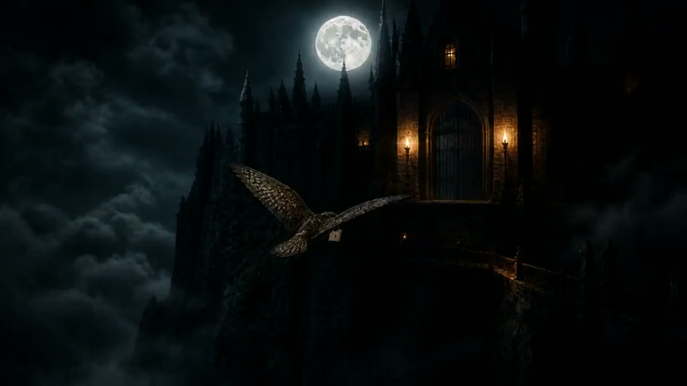
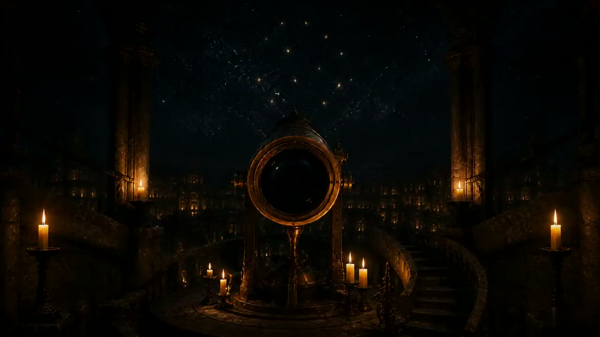

World 10 · A scroll-controlled proofالعالم ١٠ · برهان يقوده التمرير
The Academy
of Proven Spellsأكاديمية
التعاويذ المُثبتة
Nothing is magic until it survives the proof.لا يصبح شيءٌ سحرًا حتى ينجو من البرهان.
Scroll to deliver the letterمرّر لتسليم الرسالة
The Owl Descendsهبوط البومة
The rear-facing courier carries one sealed letter down the moonlit axis toward the open gate.يحمل الرسول ذو الظهر المواجه لنا رسالةً مختومة واحدة على محور ضوء القمر نحو البوابة المفتوحة.
Film poster ready.
The instrument after the filmالأداة بعد الفيلم
Failure is not the opposite of proof.
It is the first reading.الفشل ليس نقيض البرهان.
بل هو القراءة الأولى.
The same mechanism runs twice. The first pass leaves a crimson fracture. The second pass closes the ring only after the evidence is kept.تعمل الآلية نفسها مرتين. تترك المحاولة الأولى كسرًا قرمزيًا. ولا تُغلق المحاولة الثانية الحلقة إلا بعد حفظ الدليل.
- 01Attemptمحاولة
- 02Keep evidenceاحفظ الدليل
- 03Provenمُثبت

The result becomes the next inputتصبح النتيجة مُدخلًا جديدًا
The seal returns.
The method remains.يعود الختم.
وتبقى المنهجية.
Fourteen accepted returns form this cut. Two failed takes stay preserved outside the reel—not hidden, not shipped as proof.تشكّل أربع عشرة نتيجة مقبولة هذا القص. وتبقى محاولتان فاشلتان محفوظتين خارج الشريط—لا تُخفَيان ولا تُعرضان كبرهان.